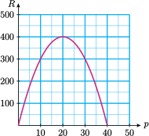
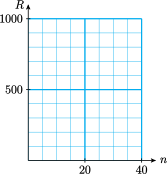
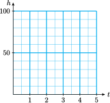
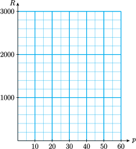

Section 6.2 Some Quadratic Models
¶Subsection Revenue
In this section we consider some applications that lead to quadratic equations. The first application involves revenue.
Revenue is the amount of money a company takes in from selling a product. To find the total revenue from the sale of a product, we multiply the price of one item by the number of items sold.
Revenue \(=\) (price per item) \(\cdot\) (number of items sold)
For example, if a snack bar sells 30 sandwiches at $4.25 each, their revenue from sandwiches is
Look Ahead.
Usually, the number of items that consumers will buy depends on the price of the item: the higher a company sets the price, the fewer items it is likely to sell. How does a company's revenue depend upon the price it charges? A good way to study such a problem is to consider the graph of the equation for revenue.
Example 6.8.
Rick works as a personal trainer at his gym. By experimenting with his fee, he discovers that if he charges \(p\) dollars per hour, he attracts \(40-p\) clients.
- Write a quadratic equation for Rick's revenue, \(R\text{,}\) in terms of his fee, \(p\text{.}\)
- Graph your equation for \(R\text{.}\)
- What should Rick charge if he wants to make $300 revenue? How many clients will he attract?
- Use your graph to find the fee Rick should charge in order to earn the largest possible revenue. How many clients will he attract at that fee?
-
Rick's revenue is given by
\begin{align*} \text{Revenue} \amp = \text{(hourly fee)} \cdot \text{(number of clients)}\\ R \amp = p(40-p) = 40p - p^2 \end{align*} We make a table of values and plot the points to obtain the parabola shown in the figure.
\(p\) \(R\) \(\hphantom{00}\) \(10\) \(300\) \(40(\alert{10})-\alert{10}^2\) \(20\) \(400\) \(40(\alert{20})-\alert{20}^2\) \(30\) \(300\) \(40(\alert{30})-\alert{30}^2\) \(40\) \(0\) \(40(\alert{40})-\alert{40}^2\) - There are two points on the graph with \(p\)-coordinate 300. Those points have \(p\)-coordinates 10 and 30. If he charges $10 per hour, he will attract \(40-10=30\) clients, and if he charges $30 per hour, he will attract \(40-30=10\) clients. In either case, his revenue will be $300.
- The largest value of \(R\) that appears on the graph occurs at the point \((20, 400)\text{,}\) so when \(p=20,~ R=400\text{.}\) If Rick charges $20 per hour, he will make $400 in revenue. He will attract \(40-20=20\) clients at that price.
Subsubsection Reading Questions
1.
State a formula for calculating revenue.
Revenue equals price per item times number of items sold.
Look Closer.
In Example 1 we found a quadratic equation for the revenue Rick earns as a personal trainer. The equation was
The graph of this equation is shown again below.
If Rick charges \(p=0\) dollars per hour, he will not earn any revenue, so \(R=0\text{.}\) You can see this fact in the graph, which passes through the point \(p=0,~R=0\text{.}\) But there is another point on the graph where \(R=0\text{;}\) it has \(p\)-coordinate \(40\text{.}\) If Rick charges 40 dollars an hour, he will not earn any revenue. (Why does this happen?)
Subsection The Zero Factor Principle
Look again at the equation for revenue in Example 1,
The expression for revenue has two factors. The first factor is \(p\text{,}\) and when \(p=\alert{0}\) we have
so the revenue is zero as well. The second factor, \(40-p\text{,}\) is zero when \(p=\alert{40}\text{.}\) If Rick charges $40 an hour, his revenue is
(Recall that \(40-p\) represents the number of clients that Rick will attract if he charges \(p\) dollars an hour. Apparently, no one will pay $40 an hour for a personal trainer.)
Both of these values, \(p=0\) and\(p=40\) are solutions of the quadratic equation
A quadratic equation has a solution when either of its factors is equal to zero. This is a consequence of the following fact about numbers.
Zero-Factor Principle.
If the product of two numbers is zero, then one (or both) of the numbers must be zero. Using symbols,
The zero-factor principle also applies to algebraic expressions: If the product of two factors is zero, then one of the factors must be zero.
Example 6.9.
For what values of is the expression \(3x(x-5)\) equal to zero?
The expression is equal to zero if either of its factors equals zero. The factor \(3x\) equals zero if \(x=0\text{,}\) and \(x-5\) equals zero if \(x=5\text{.}\) So \(3x(x-5)\) equals zero if \(x=0\) or \(x=5\text{.}\)
Subsubsection Reading Questions
2.
If you multiply two numbers together and the product is zero, what can you say about the original numbers?
At least one of them must be zero.
Subsection Factoring
In order to use the zero-factor principle to solve quadratic equations, we must be able to write quadratic expressions in factored form. This process is called factoring, and it is the reverse of multiplying factors together. Here are some examples comparing multiplying and factoring.
The first type of factoring we consider is the reverse of the distributive law. Consider the expression \(6x-15\text{.}\) The expression has two terms, \(6x\) and \(-15\text{,}\) and each term is divisible by 3:
We say that 3 is a common factor for the expression \(6x-15\) because it is a factor of each term. Using the distributive law, we can write
We have factored out a common factor, namely 3, from \(6x-15\text{.}\)
Subsubsection Reading Questions
3.
What does it mean to factor an expression?
To write it as a product of factors.
4.
Factoring is the reverse process for which operation?
Multiplying
Example 6.10.
Factor \(~~36t^2-63t\)
We look for the largest common factor for the two terms. Both coefficients are divisible by 9, and \(t\) divides evenly into both terms. Thus, we factor out \(\blert{9t}\) and write the expression as
You may be able to see the missing factors at a glance, but if not, you can divide each term of the original expression by the common factor, as follows:
We fill in these factors for the question marks to obtain the factored form,
You can always check your factorization by computing the product; it should be the same as the original expression.
Subsubsection Reading Questions
5.
Explain the meaning of "common factor."
An expression that is a factor of each term of another expression
Subsection Solving Quadratic Equations by Factoring
Now let's see how to solve a quadratic equation using factoring.
First, we must arrange the terms so that one side of the equation is zero; the zero-factor principle applies only to zero products.
Example 6.11.
Solve \(~~2x^2=4x\)
First, we write the equation in standard form by subtracting \(4x\) from both sides.
Next, we factor the left side of the equation. We can take out a common factor of \(2x\text{.}\)
Now, we apply the zero-factor principle: In order for the product to be zero, one of the two factors must be zero. We set each factor equal to zero, and solve for \(x\text{.}\)
Thus, the two solutions are \(x=0\) and \(x=2\text{.}\) You should check that both of these values satisfy the original equation.
Subsubsection Reading Questions
6.
What is the first step in solving a quadratic equation by factoring?
Arrange the terms so that one side of the equation is zero
Caution 6.12.
We cannot solve the equation in Example 4 by dividing both sides by \(2x\text{.}\) If we do that, we get the equation \(x=2\text{.}\) This is one of the solutions, but we have lost the second solution, \(x=0\text{.}\) We should never divide both sides of an equation by the variable, because we risk losing one of the solutions. Instead, we follow the steps below to solve the equation by factoring.
To Solve a Quadratic Equation by Factoring.
- Write the equation with zero isolated on the right side.
- Factor the left side of the equation.
- Apply the zero-factor principle; that is, set each factor equal to zero.
- Solve each equation to obtain two solutions.
Subsubsection Reading Questions
7.
Why is it wrong to divide both sides of the equation \(2x(x-2)=0\) by \(2x\text{?}\)
We lose one of the soutions.
Subsection Skills Warm-Up
¶Subsubsection Exercises
Mental Exercise: Evaluate each expression for the given values of the variable. Try not to use pencil, paper, or calculator.
1.
\(2x(x-3),~~~~x=0,~1,~2,~3\)2.
\((x+1)(x-6),~~~~x=-1,~3,~6,~9\)3.
\(2(x+2)(x+4),~~~~x=-4,~-2,~0,~2\)4.
\(3n(2n-1),~~~~n=-1,~0,~\dfrac{1}{2},~1\)Subsubsection Answers to Skills Warm-Up
Subsubsection Exercises
Subsection Homework 6.2
For Problems 1–3, apply the zero-factor principle to find the solutions.
1.
\((x+1)(x-4)=0\)2.
\(0=p(p+7)\)3.
\((2v+3)(4v-1)=0\)For Problems 4–5,
- Verify that the factored form for each expression is correct.
- Use the factored form to find the solutions of the original equation.
- Check algebraically that your answers to part (b) actually are solutions of the original equation.
4.
\(x^2-6x-27=0\)
factored form: \((x-9)(x+3)=0\)
5.
\(x^2-81=0\)
factored form: \((x-9)(x+9)=0\)
For Problems 6–8, find the largest common factor for the monomials.
6.
\(8x^2,~ 12x\)
7.
\(6a^2b,~ 9ab^2\)
8.
\(10w^2,~ 15w\)
For Problems 9–12, fill in the missing algebraic expressions.
9.
\(4x(2x+?)=8x^2-12x\)
10.
\(?(a-3)=2a^2-6a\)
11.
\(6h(?+?)=24h-18h^2\)
12.
\(?(4m-9)=-12m^2+27m\)
For Problems 13–15, factor out the largest common factor.
13.
\(6a^2-8a\)
14.
\(-18v^2-6v\)
15.
\(4h-9h^2\)
For Problems 16–18, factor the right side of the formula.
16.
\(d=k-kat\)
17.
\(A=2rh-\pi r^2\)
18.
\(V=\pi r^2h - \dfrac{1}{3}s^2h\)
For Problems 19–24, solve the equation.
19.
\(10x^2-15x=0\)
20.
\(20x^2=x\)
21.
\(0=144x+3x^2\)
22.
\(4x-6x^2=0\)
23.
\(x^2+x=0\)
24.
\(\dfrac{1}{3}x^2=\dfrac{2}{3}x\)
25.
-
Complete the table of values for the equation \(y=-x^2+6x\text{,}\) then graph the equation on the grid.
\(x\) \(-1\) \(0\) \(1\) \(2\) \(3\) \(4\) \(5\) \(6\) \(7\) \(y\) \(\hphantom{0000}\) \(\hphantom{0000}\) \(\hphantom{0000}\) \(\hphantom{0000}\) \(\hphantom{0000}\) \(\hphantom{0000}\) \(\hphantom{0000}\) \(\hphantom{0000}\) \(\hphantom{0000}\) 
- Use your graph to find the solutions of the equation \(-x^2+6x=5\text{.}\)
- Verify algebraically that your answers to part (a) are really solutions.
- Use your graph to find the solutions of the equation \(-x^2+6x=0\text{.}\)
- Verify algebraically that your answers to part (d) are really solutions.
- Compute the product \(-x(x+6)\text{.}\) What do you get?
- What is the value of the expression \(-x(x+6)\) when \(x=0\text{?}\) When \(x=6\text{?}\)
26.
-
Complete the table of values for the equation \(y=x^2+2x-8\text{,}\) then graph the equation on the grid.
\(x\) \(-5\) \(-4\) \(-3\) \(-2\) \(-1\) \(0\) \(1\) \(2\) \(3\) \(y\) \(\hphantom{0000}\) \(\hphantom{0000}\) \(\hphantom{0000}\) \(\hphantom{0000}\) \(\hphantom{0000}\) \(\hphantom{0000}\) \(\hphantom{0000}\) \(\hphantom{0000}\) \(\hphantom{0000}\) - Use your graph to find the solutions of the equation \(x^2+2x-8=7\text{.}\)
- Verify algebraically that your answers to part (a) are really solutions.
- Use your graph to find the solutions of the equation \(x^2+2x-8=0\text{.}\)
- Verify algebraically that your answers to part (d) are really solutions.
- Compute the product \((x+4)(x-2)\text{.}\) What do you get?
- What is the value of the expression \((x+4)(x-2)\) when \(x=-4\text{?}\) When \(x=2\text{?}\)
27.
The revenue you can earn by making and selling \(n\) jade bracelets is given in dollars by
- Factor \(n\) from the expression for \(R\text{.}\) How much should you charge per bracelet in order to sell \(n\) bracelets?
Complete the table and sketch a graph.
\(n\) Price per Bracelet \(R\) \(0\) \(\hphantom{0000}\) \(\hphantom{0000}\) \(5\) \(\hphantom{0000}\) \(\hphantom{0000}\) \(10\) \(\hphantom{0000}\) \(\hphantom{0000}\) \(20\) \(\hphantom{0000}\) \(\hphantom{0000}\) \(30\) \(\hphantom{0000}\) \(\hphantom{0000}\) \(40\) \(\hphantom{0000}\) \(\hphantom{0000}\) - What is the maximum revenue that you can earn? How many bracelets should you make in order to earn that revenue?
- How much revenue will you earn if you charge $40 for a bracelet?
28.
The height in feet of a football \(t\) seconds after being kicked from the ground is given by
- Factor the expression for \(h\text{.}\)
Complete the table and sketch a graph.
\(t\) \(h\) \(0\) \(\hphantom{0000}\) \(1\) \(\hphantom{0000}\) \(2\) \(\hphantom{0000}\) \(2.5\) \(\hphantom{0000}\) \(3\) \(\hphantom{0000}\) \(4\) \(\hphantom{0000}\) \(5\) \(\hphantom{0000}\) - What is the maximum height of the football? When does it reach this height?
- When does the football fall back to the ground?
29.
Sportsworld sells \(180-3p\) pairs of their name-brand running shoes per week when they charge \(p\) dollars per pair.
- Write an equation for Sportsworld's revenue, \(R\text{,}\) in terms of \(p\text{.}\)
-
Fill in the table and graph the equation.
\(p\) \(R\) \(0\) \(\hphantom{0000}\) \(10\) \(\hphantom{0000}\) \(20\) \(\hphantom{0000}\) \(30\) \(\hphantom{0000}\) \(40\) \(\hphantom{0000}\) \(50\) \(\hphantom{0000}\) \(60\) \(\hphantom{0000}\)  - At what price(s) will Sportsworld's revenue be zero?
- At what price will Sportsworld's revenue be maximum? What is their maximum revenue?
For Problems 30–32, find the \(x\)-intercepts of the graph of the equation.
30.
\(y=(3x-4)(x+2)\)
31.
\(y=3x^2+12x\)
32.
\(y=-7x-4x^2\)
For Problems 33–34, graph all three equations on the same grid. What do you observe?
33.
\(y=x\)
\(y=6-x\)
\(y=6x-x^2\)
34.
\(y=x+3\)
\(y=3-x\)
\(y=x^2-9\)
For Problems 35–36, \(\alert{\text{find the mistake}}\) in the steps for solution, then write a correct solution.